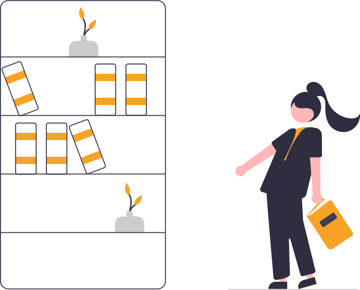
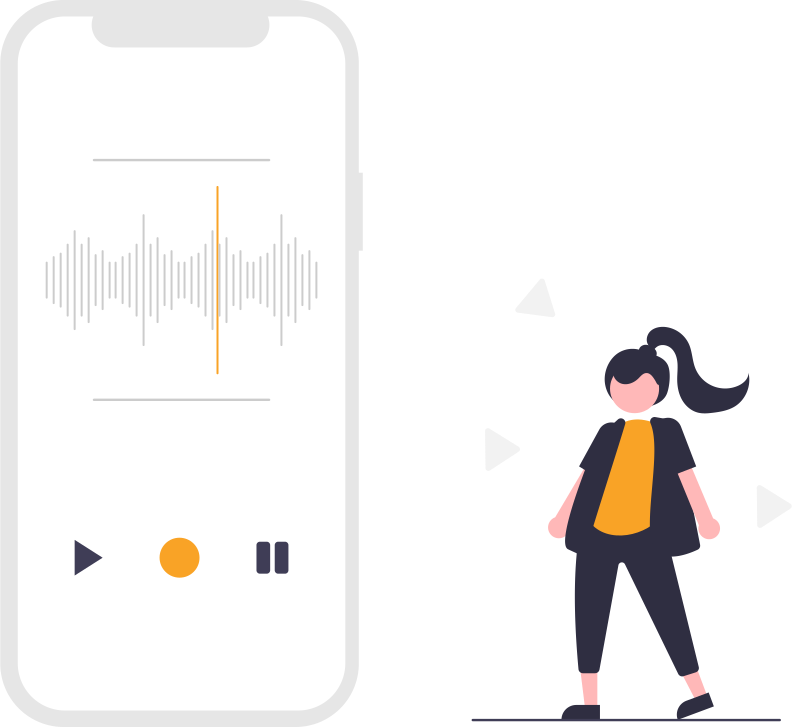
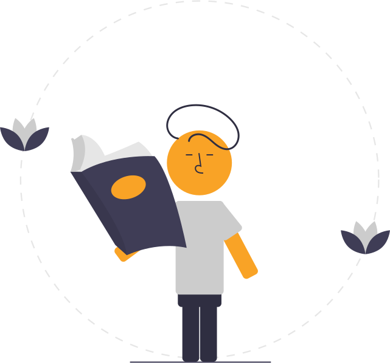

Word of the day
HTML
A worksheet to guide students through a new word - complete with definitions, etymology, and creative
activities
Built with the help of GPT, it's an easily printable HTML file, but can have occasional errors.
Check back daily for a new word!
See today's word
↗

The Open Library
EPUB
Great books, out of copyright, and in Kindle format
Tracking down the right ePub files can be a pain. Here's my repository of classic texts for you to
browse.
Only possible thanks to Project Gutenberg .
Open the library
↗

Project Bloom
iOS
Turn a stream-of-consciousness into something intelligible.
This Shortcut for Mac uses the OpenAI API to sanitise dictated input, generally to pretty good
effect.
You will need an API key to use it.Get one
here.
Download on iCloud
↗

Super Focus Mode
iOS
Block distracting apps, not just notifications
This Shortcut tries to make the built-in 'Focus' mode a little more effective. Once activated, it
closes and blocks any apps you deem to be distracting.
A bit janky, but mostly functional.
Download on iCloud
↗